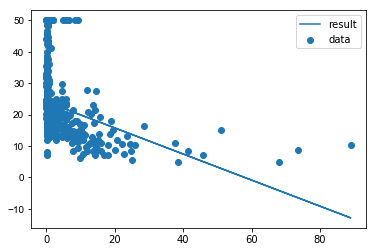
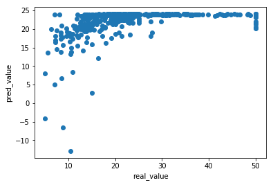
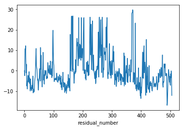
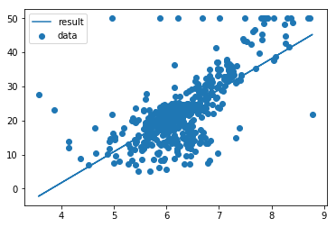
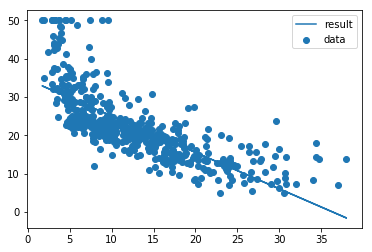
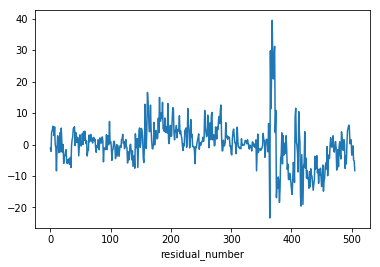
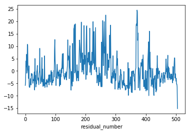

단순선형회귀분석 실습 - 단순선형회귀 적합 및 해석
import os
import pandas as pd
import numpy as np
import statsmodels.api as sm
# 현재경로 확인
os.getcwd()
'C:\\Users\\MyCom\\jupyter-tutorial\\머신러닝과 데이터분석 A-Z 올인원 패키지 Online\\Machine learning의 개념과 종류'
# 데이터 불러오기
boston = pd.read_csv("Boston_house.csv")
boston.head()
| AGE | B | RM | CRIM | DIS | INDUS | LSTAT | NOX | PTRATIO | RAD | ZN | TAX | CHAS | Target | |
|---|---|---|---|---|---|---|---|---|---|---|---|---|---|---|
| 0 | 65.2 | 396.90 | 6.575 | 0.00632 | 4.0900 | 2.31 | 4.98 | 0.538 | 15.3 | 1 | 18.0 | 296 | 0 | 24.0 |
| 1 | 78.9 | 396.90 | 6.421 | 0.02731 | 4.9671 | 7.07 | 9.14 | 0.469 | 17.8 | 2 | 0.0 | 242 | 0 | 21.6 |
| 2 | 61.1 | 392.83 | 7.185 | 0.02729 | 4.9671 | 7.07 | 4.03 | 0.469 | 17.8 | 2 | 0.0 | 242 | 0 | 34.7 |
| 3 | 45.8 | 394.63 | 6.998 | 0.03237 | 6.0622 | 2.18 | 2.94 | 0.458 | 18.7 | 3 | 0.0 | 222 | 0 | 33.4 |
| 4 | 54.2 | 396.90 | 7.147 | 0.06905 | 6.0622 | 2.18 | 5.33 | 0.458 | 18.7 | 3 | 0.0 | 222 | 0 | 36.2 |
# target 제외한 데이터만 뽑기
boston_data = boston.drop(['Target'],axis=1)
# boston_data
boston_data.describe()
# data 통계 뽑아보기
| AGE | B | RM | CRIM | DIS | INDUS | LSTAT | NOX | PTRATIO | RAD | ZN | TAX | CHAS | |
|---|---|---|---|---|---|---|---|---|---|---|---|---|---|
| count | 506.000000 | 506.000000 | 506.000000 | 506.000000 | 506.000000 | 506.000000 | 506.000000 | 506.000000 | 506.000000 | 506.000000 | 506.000000 | 506.000000 | 506.000000 |
| mean | 68.574901 | 356.674032 | 6.284634 | 3.613524 | 3.795043 | 11.136779 | 12.653063 | 0.554695 | 18.455534 | 9.549407 | 11.363636 | 408.237154 | 0.069170 |
| std | 28.148861 | 91.294864 | 0.702617 | 8.601545 | 2.105710 | 6.860353 | 7.141062 | 0.115878 | 2.164946 | 8.707259 | 23.322453 | 168.537116 | 0.253994 |
| min | 2.900000 | 0.320000 | 3.561000 | 0.006320 | 1.129600 | 0.460000 | 1.730000 | 0.385000 | 12.600000 | 1.000000 | 0.000000 | 187.000000 | 0.000000 |
| 25% | 45.025000 | 375.377500 | 5.885500 | 0.082045 | 2.100175 | 5.190000 | 6.950000 | 0.449000 | 17.400000 | 4.000000 | 0.000000 | 279.000000 | 0.000000 |
| 50% | 77.500000 | 391.440000 | 6.208500 | 0.256510 | 3.207450 | 9.690000 | 11.360000 | 0.538000 | 19.050000 | 5.000000 | 0.000000 | 330.000000 | 0.000000 |
| 75% | 94.075000 | 396.225000 | 6.623500 | 3.677083 | 5.188425 | 18.100000 | 16.955000 | 0.624000 | 20.200000 | 24.000000 | 12.500000 | 666.000000 | 0.000000 |
| max | 100.000000 | 396.900000 | 8.780000 | 88.976200 | 12.126500 | 27.740000 | 37.970000 | 0.871000 | 22.000000 | 24.000000 | 100.000000 | 711.000000 | 1.000000 |
'''
타겟 데이터
1978 보스턴 주택 가격
506개 타운의 주택 가격 중앙값 (단위 1,000 달러)
특징 데이터
CRIM: 범죄율
INDUS: 비소매상업지역 면적 비율
NOX: 일산화질소 농도
RM: 주택당 방 수
LSTAT: 인구 중 하위 계층 비율
B: 인구 중 흑인 비율
PTRATIO: 학생/교사 비율
ZN: 25,000 평방피트를 초과 거주지역 비율
CHAS: 찰스강의 경계에 위치한 경우는 1, 아니면 0
AGE: 1940년 이전에 건축된 주택의 비율
RAD: 방사형 고속도로까지의 거리
DIS: 직업센터의 거리
TAX: 재산세율'''
'\n타겟 데이터\n1978 보스턴 주택 가격\n506개 타운의 주택 가격 중앙값 (단위 1,000 달러)\n\n특징 데이터\nCRIM: 범죄율\nINDUS: 비소매상업지역 면적 비율\nNOX: 일산화질소 농도\nRM: 주택당 방 수\nLSTAT: 인구 중 하위 계층 비율\nB: 인구 중 흑인 비율\nPTRATIO: 학생/교사 비율\nZN: 25,000 평방피트를 초과 거주지역 비율\nCHAS: 찰스강의 경계에 위치한 경우는 1, 아니면 0\nAGE: 1940년 이전에 건축된 주택의 비율\nRAD: 방사형 고속도로까지의 거리\nDIS: 직업센터의 거리\nTAX: 재산세율'
crim/rm/lstat 세게의 변수로 각각 단순 선형 회귀 분석하기
target = boston[['Target']]
# boston_target
crim=boston[['CRIM']]
rm=boston[['RM']]
lstat=boston['LSTAT']
target ~ crim 선형회귀분석
crim1 = sm.add_constant(crim, has_constant='add')
model1 = sm.OLS(target,crim1)
fitted_model1=model1.fit()
fitted_model1.summary()
| Dep. Variable: | Target | R-squared: | 0.151 |
|---|---|---|---|
| Model: | OLS | Adj. R-squared: | 0.149 |
| Method: | Least Squares | F-statistic: | 89.49 |
| Date: | Wed, 12 May 2021 | Prob (F-statistic): | 1.17e-19 |
| Time: | 15:52:25 | Log-Likelihood: | -1798.9 |
| No. Observations: | 506 | AIC: | 3602. |
| Df Residuals: | 504 | BIC: | 3610. |
| Df Model: | 1 | ||
| Covariance Type: | nonrobust |
| coef | std err | t | P>|t| | [0.025 | 0.975] | |
|---|---|---|---|---|---|---|
| const | 24.0331 | 0.409 | 58.740 | 0.000 | 23.229 | 24.837 |
| CRIM | -0.4152 | 0.044 | -9.460 | 0.000 | -0.501 | -0.329 |
| Omnibus: | 139.832 | Durbin-Watson: | 0.713 |
|---|---|---|---|
| Prob(Omnibus): | 0.000 | Jarque-Bera (JB): | 295.404 |
| Skew: | 1.490 | Prob(JB): | 7.14e-65 |
| Kurtosis: | 5.264 | Cond. No. | 10.1 |
Notes:
[1] Standard Errors assume that the covariance matrix of the errors is correctly specified.
y_hat=beta0 + beta1 * X 계산해보기
(np.dot(crim1,fitted_model1.params))
array([ 24.03048217, 24.02176733, 24.02177563, 24.01966646,
24.00443729, 24.02071274, 23.99644902, 23.97309042,
23.94540138, 23.96250722, 23.93973403, 23.98433377,
23.99416963, 23.77163594, 23.76823138, 23.77261995,
23.59552468, 23.70751396, 23.69982879, 23.73176107,
23.51337514, 23.67934745, 23.52139661, 23.62271965,
23.72160552, 23.68412214, 23.75413567, 23.63627976,
23.71216824, 23.61689868, 23.56360486, 23.4706396 ,
23.45682622, 23.55492323, 23.36347899, 24.00646341,
23.99265003, 23.99983283, 23.96042712, 24.02163447,
24.01915993, 23.98019433, 23.97435675, 23.96694145,
23.98216648, 23.96193426, 23.95490093, 23.9379155 ,
23.92770182, 23.94185981, 23.99626634, 24.01509937,
24.01085198, 24.01242555, 24.02745959, 24.02766303,
24.02457401, 24.02716065, 23.96898004, 23.99022532,
23.97110996, 23.96181385, 23.98732314, 23.9805846 ,
24.02500581, 24.01822575, 24.01492499, 24.00907081,
23.97683128, 23.97989539, 23.99646148, 23.96719057,
23.99505814, 23.95198215, 24.00032275, 23.99361327,
23.99095191, 23.99695556, 24.00966453, 23.99828417,
24.0160294 , 24.01458038, 24.01791436, 24.01836277,
24.0121017 , 24.00929501, 24.0115661 , 24.00341592,
24.0096064 , 24.01109279, 24.01365866, 24.01678089,
24.01565573, 24.02116945, 24.0152779 , 23.98243635,
23.98534268, 23.98293873, 23.99911455, 24.00462412,
23.97138399, 23.98564162, 23.93812725, 23.94524776,
23.97514561, 23.97804364, 23.9620256 , 23.97864567,
23.97995351, 23.92364956, 23.98829469, 23.99123839,
23.98191736, 23.94088411, 23.97402045, 23.96196747,
23.97847544, 23.97042075, 23.97889063, 23.97300323,
24.0044622 , 24.00335779, 23.99449763, 23.97066986,
23.99221408, 23.96293071, 23.87228222, 23.92550961,
23.8979908 , 23.66721974, 23.89191657, 23.53780908,
23.78812315, 23.89616812, 23.62780988, 23.80152134,
23.89914918, 23.88682218, 23.92939164, 23.80702676,
23.91232732, 23.35691068, 22.6542385 , 22.33190553,
22.87898515, 23.04522734, 23.13835037, 23.04967818,
23.06530179, 22.89798841, 23.34530196, 23.41184866,
23.56536111, 23.14078753, 23.4460894 , 22.56540439,
23.01726842, 23.52508765, 23.47557206, 23.44145172,
23.50437796, 23.42553333, 23.2717427 , 23.40242384,
23.1021001 , 22.8190898 , 23.19849483, 23.28564742,
23.07800246, 23.01608513, 23.53179713, 23.07239739,
23.9753366 , 23.99500001, 23.99803505, 24.00543789,
24.00395151, 24.0105821 , 24.00552924, 24.00910818,
24.00575344, 24.00450787, 23.9953114 , 23.99155393,
23.99861217, 24.00799962, 24.00984721, 24.00040994,
23.98087939, 23.99835475, 23.99545672, 24.00441237,
23.99713409, 24.02402596, 24.02713159, 24.0273724 ,
24.01645289, 24.0137334 , 24.0174618 , 24.02002768,
24.02572409, 24.01880287, 24.02406748, 24.018533 ,
24.024765 , 23.97646592, 23.93774112, 23.92848238,
23.97669427, 23.85220362, 23.96067208, 23.87708597,
23.942931 , 23.97476364, 23.91288783, 23.9508902 ,
24.0141735 , 24.00398888, 23.98714876, 23.98567068,
23.88443069, 23.86382895, 23.77421012, 23.77788871,
23.90218422, 23.81432996, 23.87444536, 23.86189001,
23.90930059, 23.84968341, 23.81014899, 23.84088968,
23.79425136, 23.89548305, 23.8471383 , 23.89590655,
23.81696642, 23.82059933, 23.99887789, 23.99469277,
23.98606927, 23.98904618, 23.99038309, 23.98014035,
23.94754376, 23.95366782, 23.89201206, 23.95149222,
23.96485304, 23.95391693, 23.97485498, 23.94421809,
23.99897338, 23.87992587, 24.01309815, 24.01837522,
24.02672055, 23.77920071, 23.75762327, 23.76047148,
23.80885775, 23.81134474, 23.8171491 , 23.69046625,
23.80472246, 23.71688895, 23.70689117, 23.79298503,
23.80869583, 23.99546918, 23.90889785, 23.96579968,
23.98552537, 23.94098376, 24.00967283, 23.9932313 ,
23.9896399 , 24.00766747, 23.99998229, 23.94575844,
24.01825067, 24.01772337, 24.00765916, 24.02687417,
24.02934455, 24.02855569, 24.02494769, 24.01703416,
24.01404894, 24.01526545, 24.01856621, 24.00036427,
24.01809705, 23.9987907 , 23.99906472, 23.97941377,
24.01080215, 23.97455189, 24.00625997, 24.01001744,
24.01476722, 24.01842089, 23.99463464, 23.99158715,
24.01020843, 24.0103579 , 24.00195445, 24.01262899,
23.82842567, 23.88803869, 22.9388805 , 23.70493563,
23.92445503, 23.92126222, 23.87981792, 23.92783053,
23.90096356, 23.93129321, 23.86619138, 23.83569565,
23.96352028, 23.95771177, 23.88731626, 23.91522535,
23.89148892, 23.95344777, 23.90710838, 23.93303286,
24.00563303, 24.00518878, 24.01423993, 24.01225117,
24.01871568, 24.01200205, 24.01758636, 24.01666049,
24.0188776 , 24.02048024, 24.01937998, 24.01028316,
24.00756782, 24.02770455, 24.02273472, 24.02254789,
24.02044702, 24.0201813 , 24.00752215, 24.02534212,
24.02687417, 24.02106981, 24.00731871, 24.00009855,
24.00302979, 24.02601057, 24.01524884, 23.98885104,
20.30346852, 22.43474816, 21.87338184, 22.26385169,
22.14734515, 22.44008751, 22.50594499, 22.2800109 ,
22.5906189 , 22.14155324, 22.49816848, 18.4188202 ,
21.99941285, 21.6789856 , 21.31827659, 20.19994497,
20.60062435, 19.42113105, 16.35283338, 15.8915985 ,
17.68567721, 19.95448863, 14.21460344, 16.61502604,
-12.90894703, 17.44220963, 20.21874479, 20.71470618,
15.69405096, 17.05301026, 13.90503757, 14.65100995,
18.08189329, 20.64858298, 21.14248918, 21.83548327,
19.22607466, 20.44388587, 18.4862471 , 20.41399632,
21.5950881 , 20.84775806, 8.10981167, 19.91585102,
13.63420895, 18.12237434, 20.04906067, 13.73568146,
6.79058608, -4.16694965, 15.43194134, 19.07112564,
20.95908303, 18.03846438, 2.80201916, 18.19939214,
16.22296186, 12.13549661, 5.0397702 , 16.52455607,
19.53485167, 13.26282125, -6.49753724, 19.12875405,
19.42972549, 21.11739508, 19.03081067, 21.10584033,
20.38270343, 17.44806381, 18.9481878 , 8.39625145,
20.97435373, 20.15568984, 20.50725636, 19.85533704,
21.35759926, 21.71590017, 18.25639776, 19.3994166 ,
18.04573021, 17.73168029, 18.35409203, 20.13420789,
14.87770384, 19.99572118, 21.68048444, 19.89509566,
18.71771568, 19.60227857, 21.42236064, 19.91240494,
20.1597587 , 20.90837999, 21.24397414, 21.77399775,
21.91971708, 20.60857939, 20.08313949, 22.05996835,
22.09465335, 20.62830508, 20.81445565, 21.20932651,
22.03515658, 22.49976281, 21.27004809, 21.61622129,
20.77829672, 22.71961021, 22.46577118, 22.19701851,
17.56622696, 18.60445177, 22.22753085, 22.3563976 ,
22.55142493, 22.10376262, 20.68842049, 21.3787449 ,
22.0105441 , 17.79553655, 19.78446406, 18.08189329,
21.61503384, 21.66312533, 21.65358426, 22.8629422 ,
23.04554703, 22.50783411, 21.66994691, 22.025383 ,
23.97047057, 23.95697273, 23.9469708 , 23.98920395,
23.98688719, 23.96114955, 23.91703143, 23.95879127,
23.91286707, 23.92167741, 23.93382587, 23.95927289,
23.93994578, 24.00710281, 24.01431051, 24.00787921,
23.98760547, 24.013422 ])
len(np.dot(crim1,fitted_model1.params))
506
pred1=fitted_model1.predict(crim1)
pred1-np.dot(crim1,fitted_model1.params)
0 0.0
1 0.0
2 0.0
3 0.0
4 0.0
5 0.0
6 0.0
7 0.0
8 0.0
9 0.0
10 0.0
11 0.0
12 0.0
13 0.0
14 0.0
15 0.0
16 0.0
17 0.0
18 0.0
19 0.0
20 0.0
21 0.0
22 0.0
23 0.0
24 0.0
25 0.0
26 0.0
27 0.0
28 0.0
29 0.0
...
476 0.0
477 0.0
478 0.0
479 0.0
480 0.0
481 0.0
482 0.0
483 0.0
484 0.0
485 0.0
486 0.0
487 0.0
488 0.0
489 0.0
490 0.0
491 0.0
492 0.0
493 0.0
494 0.0
495 0.0
496 0.0
497 0.0
498 0.0
499 0.0
500 0.0
501 0.0
502 0.0
503 0.0
504 0.0
505 0.0
Length: 506, dtype: float64
적합시킨 직선 시각화
import matplotlib.pyplot as plt
plt.yticks(fontname = "Arial") #
plt.scatter(crim,target,label="data")
plt.plot(crim,pred1,label="result")
plt.legend()
plt.show()

plt.scatter(target,pred1)
plt.xlabel("real_value")
plt.ylabel("pred_value")
plt.show()

fitted_model1.resid.plot()
plt.xlabel("residual_number")
plt.show()

##잔차의 합계산해보기
sum(fitted_model1.resid)
-2.717825964282383e-13
위와 동일하게 rm변수와 lstat 변수로 각각 단순선형회귀분석 적합시켜보기
rm1 = sm.add_constant(rm, has_constant='add')
lstat1 = sm.add_constant(lstat, has_constant='add')
model2 = sm.OLS(target,rm1)
fitted_model2=model2.fit()
model3 = sm.OLS(target,lstat1)
fitted_model3=model3.fit()
fitted_model2.summary()
| Dep. Variable: | Target | R-squared: | 0.484 |
|---|---|---|---|
| Model: | OLS | Adj. R-squared: | 0.483 |
| Method: | Least Squares | F-statistic: | 471.8 |
| Date: | Mon, 12 Aug 2019 | Prob (F-statistic): | 2.49e-74 |
| Time: | 16:00:59 | Log-Likelihood: | -1673.1 |
| No. Observations: | 506 | AIC: | 3350. |
| Df Residuals: | 504 | BIC: | 3359. |
| Df Model: | 1 | ||
| Covariance Type: | nonrobust |
| coef | std err | t | P>|t| | [0.025 | 0.975] | |
|---|---|---|---|---|---|---|
| const | -34.6706 | 2.650 | -13.084 | 0.000 | -39.877 | -29.465 |
| RM | 9.1021 | 0.419 | 21.722 | 0.000 | 8.279 | 9.925 |
| Omnibus: | 102.585 | Durbin-Watson: | 0.684 |
|---|---|---|---|
| Prob(Omnibus): | 0.000 | Jarque-Bera (JB): | 612.449 |
| Skew: | 0.726 | Prob(JB): | 1.02e-133 |
| Kurtosis: | 8.190 | Cond. No. | 58.4 |
Warnings:
[1] Standard Errors assume that the covariance matrix of the errors is correctly specified.
fitted_model3.summary()
| Dep. Variable: | Target | R-squared: | 0.544 |
|---|---|---|---|
| Model: | OLS | Adj. R-squared: | 0.543 |
| Method: | Least Squares | F-statistic: | 601.6 |
| Date: | Mon, 12 Aug 2019 | Prob (F-statistic): | 5.08e-88 |
| Time: | 16:04:22 | Log-Likelihood: | -1641.5 |
| No. Observations: | 506 | AIC: | 3287. |
| Df Residuals: | 504 | BIC: | 3295. |
| Df Model: | 1 | ||
| Covariance Type: | nonrobust |
| coef | std err | t | P>|t| | [0.025 | 0.975] | |
|---|---|---|---|---|---|---|
| const | 34.5538 | 0.563 | 61.415 | 0.000 | 33.448 | 35.659 |
| LSTAT | -0.9500 | 0.039 | -24.528 | 0.000 | -1.026 | -0.874 |
| Omnibus: | 137.043 | Durbin-Watson: | 0.892 |
|---|---|---|---|
| Prob(Omnibus): | 0.000 | Jarque-Bera (JB): | 291.373 |
| Skew: | 1.453 | Prob(JB): | 5.36e-64 |
| Kurtosis: | 5.319 | Cond. No. | 29.7 |
Warnings:
[1] Standard Errors assume that the covariance matrix of the errors is correctly specified.
pred2=fitted_model2.predict(rm1)
pred3=fitted_model3.predict(lstat1)
import matplotlib.pyplot as plt
plt.scatter(rm,target,label="data")
plt.plot(rm,pred2,label="result")
plt.legend()
plt.show()

import matplotlib.pyplot as plt
plt.scatter(lstat,target,label="data")
plt.plot(lstat,pred3,label="result")
plt.legend()
plt.show()

fitted_model2.resid.plot()
plt.xlabel("residual_number")
plt.show()

fitted_model3.resid.plot()
plt.xlabel("residual_number")
plt.show()

fitted_model1.resid.plot(label="crim")
fitted_model2.resid.plot(label="rm")
fitted_model3.resid.plot(label="lstat")
plt.legend()